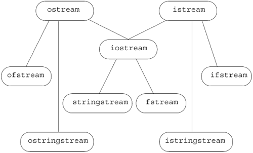

8.1. An Object-Oriented LibraryThe IO types and objects we've used so far read and write streams of data and are used to interact with a user's console window. Of course, real programs cannot be limited to doing IO solely to or from a console window. Programs often need to read or write named files. Moreover, it can be quite convenient to use the IO operations to format data in memory, thereby avoiding the complexity and run-time expense of reading or writing to a disk or other device. Applications also may have to read and write languages that require wide-character support. Conceptually, neither the kind of device nor the character size affect the IO operations we want to perform. For example, we'd like to use >> to read data regardless of whether we're reading a console window, a disk file, or an in-memory string. Similarly, we'd like to use that operator regardless of whether the characters we read fit in a char or require the wchar_t (Section 2.1.1, p. 34) type. At first glance, the complexities involved in supporting or using these different kinds of devices and different sized character streams might seem a daunting problem. To manage the complexity, the library uses inheritance to define a set of object-oriented classes. We'll have more to say about inheritance and object-oriented programming in Part IV, but generally speaking, types related by inheritance share a common interface. When one class inherits from another, we (usually) can use the same operations on both classes. More specifically, when two types are related by inheritance, we say that one class "inherits" the behaviorthe interfaceof its parent. In C++ we speak of the parent as the base class and the inheriting class as a derived class. The IO types are defined in three separate headers: iostream defines the types used to read and write to a console window, fstream defines the types used to read and write named files, and sstream defines the types used to read and write in-memory strings. Each of the types in fstream and sstream is derived from a corresponding type defined in the iostream header. Table 8.1 lists the IO classes and Figure 8.1 on the next page illustrates the inheritance relationships among these types. Inheritance is usually illustrated similarly to how a family tree is displayed. The topmost circle represents a base (or parent) class. Lines connect a base class to its derived (or children) class(es). So, for example, this figure indicates that istream is the base class of ifstream and istringstream. It is also the base class for iostream, which in turn is the base class for sstream and fstream classes.
Figure 8.1. Simplified iostream Inheritance Hierarchy Because the types ifstream and istringstream inherit from istream, we already know a great deal about how to use these types. Each program we've written that read an istream could be used to read a file (using the ifstream type) or a string (using the istringstream type). Similarly, programs that did output could use an ofstream or ostringstream instead of ostream. In addition to the istream and ostream types, the iostream header also defines the iostream type. Although our programs have not used this type, we actually know a good bit about how to use an iostream. The iostream type is derived from both istream and ostream. Being derived from both types means that an iostream object shares the interface of both its parent types. That is, we can use an iostream type to do both input and output to the same stream. The library also defines two types that inherit from iostream. These types can be used to read or write to a file or a string. Using inheritance for the IO types has another important implication: As we'll see in Chapter 15, when we have a function that takes a reference to a base-class type, we can pass an object of a derived type to that function. This fact means that a function written to operate on istream& can be called with an ifstream or istringstream object. Similarly, a function that takes an ostream& can be called with an ofstream or ostringstream object. Because the IO types are related by inheritance, we can write one function and apply it to all three kinds of streams: console, disk files, or string streams. International Character SupportThe stream classes described thus far read and write streams composed of type char. The library defines a corresponding set of types supporting the wchar_t type. Each class is distinguished from its char counterpart by a "w" prefix. Thus, the types wostream, wistream, and wiostream read and write wchar_t data to or from a console window. The file input and output classes are wifstream, wofstream, and wfstream. The wchar_t versions of string stream input and output are wistringstream, wostringstream, and wstringstream. The library also defines objects to read and write wide characters from the standard input and standard output. These objects are distinguished from the char counterparts by a "w" prefix: The wchar_t standard input object is named wcin; standard output is wcout; and standard error is wcerr. Each of the IO headers defines both the char and wchar_t classes and standard input/output objects. The stream-based wchar_t classes and objects are defined in iostream, the wide character file stream types in fstream, and the wide character stringstreams in sstream. No Copy or Assign for IO ObjectsFor reasons that will be more apparent when we study classes and inheritance in Parts III and IV, the library types do not allow allow copy or assignment:
ofstream out1, out2;
out1 = out2; // error: cannot assign stream objects
// print function: parameter is copied
ofstream print(ofstream);
out2 = print(out2); // error: cannot copy stream objects
This requirement has two particularly important implications. As we'll see in Chapter 9, only element types that support copy can be stored in vectors or other container types. Because we cannot copy stream objects, we cannot have a vector (or other container) that holds stream objects. The second implication is that we cannot have a parameter or return type that is one of the stream types. If we need to pass or return an IO object, it must be passed or returned as a pointer or reference:
ofstream &print(ofstream&); // ok: takes a reference, no copy
while (print(out2)) { /* ... */ } // ok: pass reference to out2
Typically, we pass a stream as a nonconst reference because we pass an IO object intending to read from it or write to it. Reading or writing an IO object changes its state, so the reference must be nonconst. |